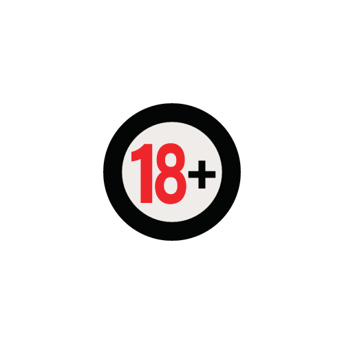
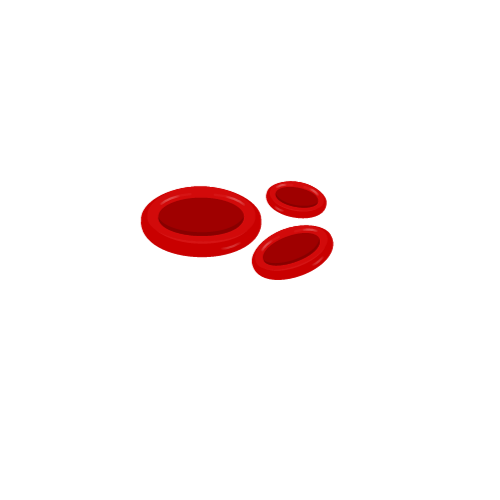
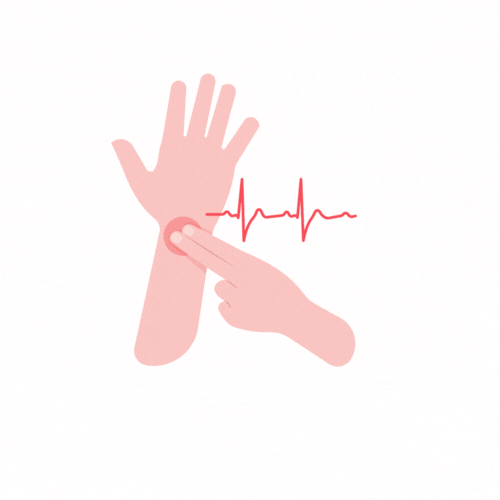
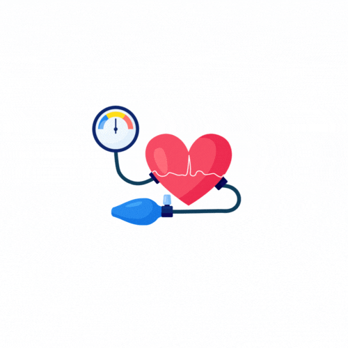
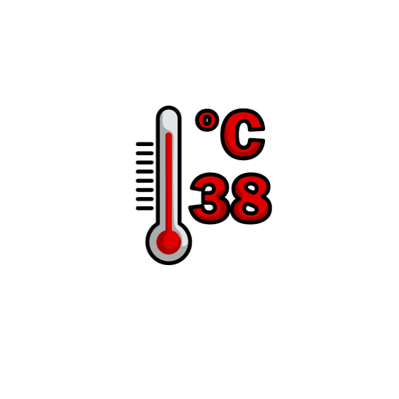
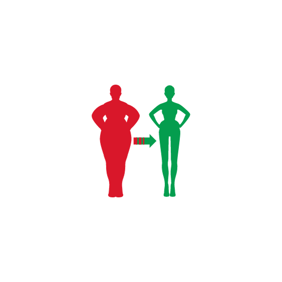
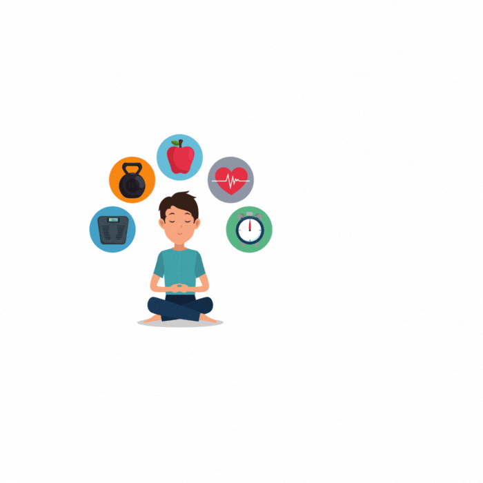

BLOOD DONOR

People who are willing to donate blood and save lives are the main target market for the fast blood donor finder website. This includes anybody who satisfies the requirements for blood donation, regardless of their age, gender, or origin. Regular blood donors looking for a convenient blood donation site. First-time blood donors looking to discover an appropriate site and learn more about the donation process. Blood donors in need of an immediate blood donation who need to locate a blood bank or hospital in the area.
Eligibility Criteria for Blood Donation Who are Eligible to Donate Blood?
Any healthy adult, both male and female, can donate every three months Good health of the donor must be fully ensured. The universally accepted criteria for donor selection are:|  | Age between 18 and 60 years. |
|  | Haemoglobin - not less than 12.5 g/Dl. |
|  | Pulse - between 50 and 100/minute with no irregularities. |
|  | Blood Pressure -Systolic 100-180 mm Hg and Diastolic 50 - 100 mm Hg. |
|  | Temperature - Normal (oral temperature not exceeding 37.50C). |
|  | Body weight - not less than 45 Kg. |
Health conditions: The donor should be in a healthy state of mind and body

They should fulfill the following criteria:
- Past one year - not been treated for Rabies or received Hepatitis B immune globulin.
- Past six months - not had a tattoo, ear or skin piercing or acupuncture, not received
blood or blood products, no serious illness or major surgery, no contact with a
person with hepatitis or yellow jaundice. - Past three months - not donated blood or been treated for Malaria.
- Past one month - had any immunizations.
- Past 48 hours - taken any antibiotics or any other medications (Allopathic or Ayurveda or Sidha or Homeo)
- Past 24 hours - taken alcoholic beverages
- Past 72 hours - had dental work or taken Aspirin
- Present - not suffering from cough, influenza or sore throat, common cold
- Women should not be pregnant or breast feeding her child
- Women donor should not donate during her menstrual cycles
- Free from Diabetes, not suffering from chest pain, heart disease or high BP, cancer, blood clotting problem or blood disease, unexplained fever, weight loss, fatigue, night sweats,enlarged lymph nodes in armpits, neck or groin, white patches in the mouth etc.
- Ever had TB, bronchial asthma or allergic disorder, liver disease, kidney disease, fits or fainting, blue or purple spots on the skin or mucous membranes, received human pituitary - growth hormones etc .